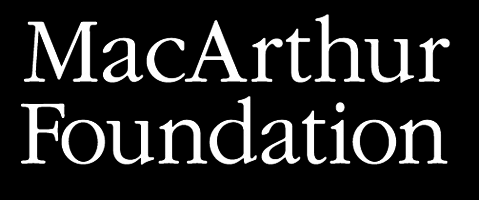

QUEST
A Portrait of an American Family

- 


Complete Reviews
• Daily Herald, Court Mann, Sundance doc 'QUEST' reveals the true isolation at poverty's core, January, 21, 2017
• The Playlist, Bradley Warren, Jonathan Olshefski’s ‘QUEST’ Is A Deeply Satisfying & Timely Documentary Portrait [Sundance Review], January 22, 2017
• Salt Lake Tribune, Sean P. Means, Sundance review: 'QUEST', January 22, 2017
• Indiewire, Jude Dry, ‘QUEST’ Review: A North Philadelphia Family Perseveres in Slow-Burning Verité — Sundance 2017, January 23, 2017
• Nonfics, Christopher Campbell, QUEST Chronicles a Dramatic Coming of Age During the Obama Years, January 26, 2017
• New York Times, Manohla Dargis, No Escaping Politics at the Progressive Sundance Film Festival, January 27, 2017
• Moveable Fest, Stephen Saito, Sundance ’17 Review: “QUEST” is an Extraordinary Portrait of an American Family’s Journey, January 27, 2017
• LA Times, Justin Chang, Sundance: Racial divisions, political upheaval and a gay love story take the spotlight, January 29, 2017
• Indiewire, Steve Greene, Sundance: The 12 Best Movies of the 2017 Festival, January 31, 2017
• Hollywood Reporter, Duane Byrge, 'QUEST': Film Review | Sundance 2017, January 31, 2017
• The Film Stage, Michael Syndal, QUEST: Sundance 2017 Review, January 31, 2017
• Eye For Film, Amber Wilkinson, QUEST, February 7, 2017
• Film Comment, Amy Taubin, Trails of Destruction: At Sundance, one film after another faced up to the world’s woes, March/April 2017
• Slant Magazine, Chuck Bowen, QUEST, March 7, 2017
• Move Magazine, Brooke Collier, In ‘QUEST,’ music drives the story, March 9, 2017
• New York Times, A.O. Scott, The 9 New Directors You Need to Watch, March 14, 2017
• Independent Magazine, Kurt Brokaw, New Directors/New Films 2017: “QUEST”, March 17, 2017
• Bold As Love Magazine, Curtis Caesar John, REVIEW: ‘QUEST’ is an Intimate Philly Family Portrait – New Directors/New Films 2017, March 17, 2017
• Hammer to Nail, Nelson Kim, Nelson Kim’s New Directors/New Films 2017 Highlights, March 17, 2017
• Variety, Guy Lodge, Film Review: ‘QUEST’, March 23, 2017
• Shadow And Act, Aramide A Tinubu, Sundance 2017 Review: 'QUEST' Is a Sobering But Warm Welcome Into the Lives of a North Philly Family, April 20, 2017
• Exclaim!, Josiah Hughes, QUEST Directed by Jonathan Olshefski, April 25, 2017
• Film Forward, Phil Guie, QUEST, April 28, 2017
• POV Magazine, Jason Gorber, Review: ‘QUEST’, April 29, 2017
• The Georgia Straight, Mike Usinger, DOXA 2017 review: QUEST, May 4, 2017
• Cinevue, Zoe Margolis, Film Review: QUEST, August, 2017
• Little White Lies, David Jenkins, QUEST, August 11, 2017
• The Arts Desk, Markie Robson-Scott, QUEST review - intimate documentary about a north Philly community, August 15, 2017
• Time Out Magazine, Helen O’Hara, QUEST, August 15, 2017
• Dirty Movies, Victor Fraga, QUEST, August 15, 2017
• The Digital Fix, Steven Sheehan, QUEST, August 17, 2017
• The London Economic, Michael McNulty, QUEST: Documentary Review, August 17, 2017
• Hey U Guys, Linda Marric, QUEST Review, August 17, 2017
• The Times, Kevin Maher, Film review: QUEST, August 18, 2017
• The Irish Times, Donald Clarke, QUEST review: a portrait of real black lives in the Obama years, August 18, 2017
• The Guardian, Simran Hans, QUEST review – black lives in the age of Obama, August 20, 2017
• Alice Bishop.com, Alice Bishop, “QUEST” Review, September 1, 2017
• Sight & Sound Magazine, Hannah McGill, Film of the week: QUEST’s loving, humane family portrait, September 2017